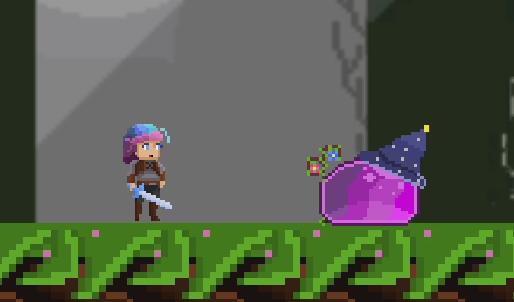
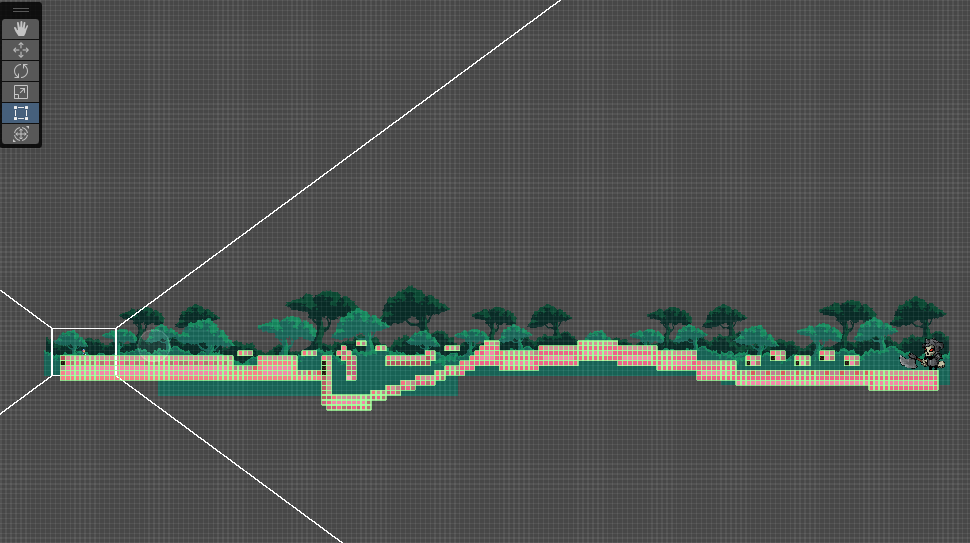
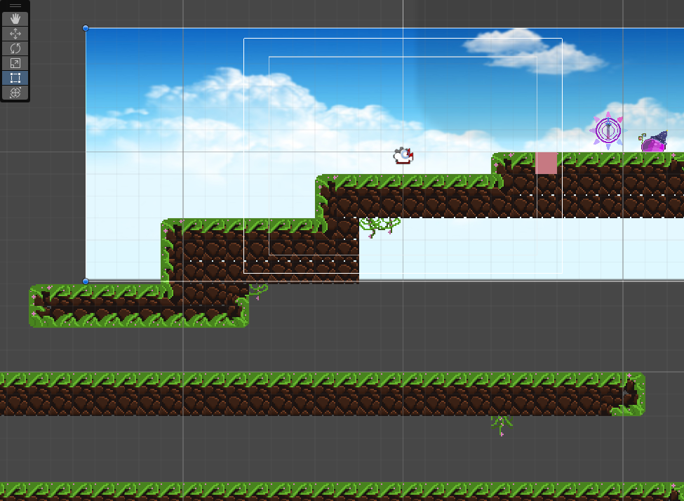
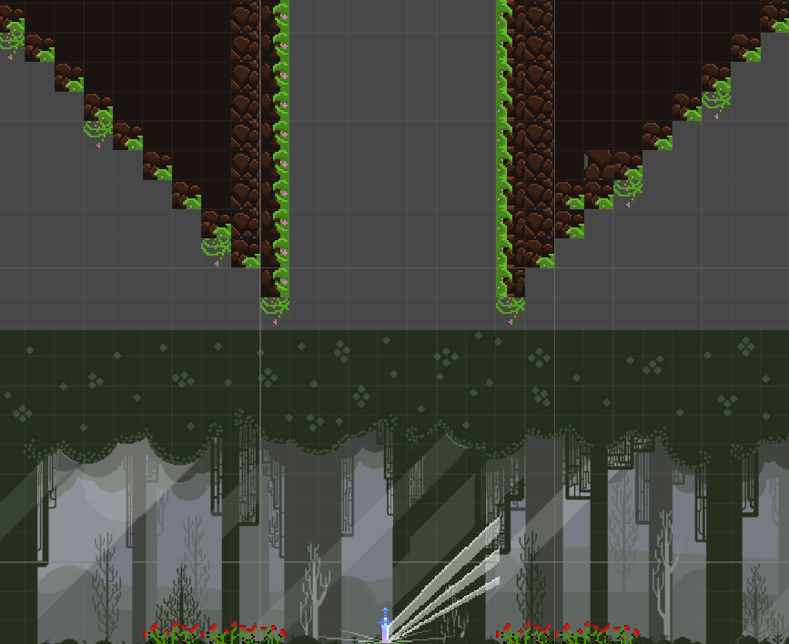
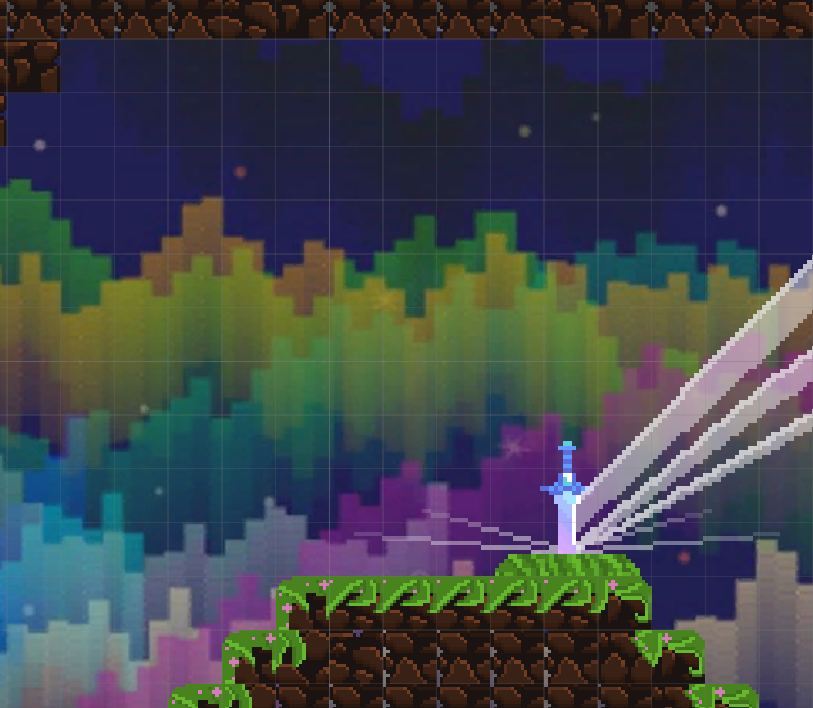

Movimiento
3Salto, dash, agarre a paredes y respuesta a caídas.
PlayerControllerPlatformFall
Moverse, combatir e interactuar dentro del mismo recorrido.
Un proyecto de plataformas y acción en 2D con movilidad sobre paredes, combate direccional y elementos interactivos. Esta primera lectura del proyecto se apoya en sus scripts, escenas y prefabs.
PROYECTO ACADÉMICO · 1.º CURSO

Me encargué del diseño de niveles y mecánicas y de la programación, con un reparto de responsabilidades similar al de 2 Valhalla y Dark Depths.
Trabajamos un equipo de tres personas: Rafa en arte y Javi en interfaces, documentación y marketing.
PlayerController reúne desplazamiento horizontal, salto, dash y acciones sobre paredes: agarre, deslizamiento y salto de pared. El ataque utiliza la dirección de entrada para orientar su animación.
El código restringe el movimiento durante algunas acciones y modifica temporalmente la gravedad durante el dash. Son reglas relevantes para estudiar el compromiso entre movilidad y ataque, aunque esta revisión todavía no permite valorar la sensación del control en una partida.
FlyEnemy se aproxima cuando el jugador entra en su rango. Contempla daño por contacto y una respuesta distinta cuando el contacto llega desde arriba.
RangedEnemy distingue la distancia de detección de la de ataque. Se acerca, se detiene y prepara un proyectil mediante una animación y una espera antes del disparo.
WayPoints organiza recorridos por puntos con pausas. Trap y los prefabs de pinchos incorporan amenazas adicionales al entorno.
El controlador contempla retroceso, invulnerabilidad temporal, parpadeo y cambios de cámara. La intención observable en el código es hacer perceptible el impacto y dar un intervalo de recuperación.
Interactive reúne cofres, palancas y puntos de interacción. Utiliza indicadores de proximidad y eventos para conectar la acción con otros elementos. Items diferencia monedas y un efecto de invulnerabilidad; AttackSurface también contempla objetos destruibles.
Dialogs presenta conversaciones con retrato y texto progresivo mientras desactiva el controlador del jugador. FinalDetection y TransitionPanel coordinan transiciones entre tramos mediante posiciones y animaciones. La carpeta contiene menú principal, selector y escenas de nivel.
La vista general muestra un recorrido lateral con cambios de altura, un descenso marcado y una sucesión de plataformas. Permite revisar la distribución del terreno y contrastarla con las opciones de salto, dash y movimiento sobre paredes presentes en el controlador.
La imagen documenta el trazado; no demuestra qué rutas se pueden completar ni el ritmo de una partida.

Otra vista del editor presenta plataformas escalonadas y superficies a distintas alturas, con una zona inferior separada. Es una base para revisar distancias de salto, posibles caídas y recuperación.
Las guías de cámara ayudan a estudiar el encuadre, aunque la captura no confirma qué ve el jugador durante todo el desplazamiento.

Las capturas sitúan una espada luminosa sobre el terreno y en un entorno de bosque. Su contraste con el fondo puede ayudar a señalar un elemento relevante, algo que convendría comprobar desde la cámara de juego.
La imagen muestra su presencia visual, pero no permite atribuirle una función concreta de recogida o desbloqueo.

El bosque, el cielo abierto y el fondo multicolor ofrecen referencias visuales distintas. La disposición de fondos y terreno permite estudiar cómo se conserva la lectura del personaje y de las plataformas en cada zona.
Estas vistas conservan cuadrícula y elementos de edición; no se presentan como capturas de una partida.

Salto, dash, agarre a paredes y respuesta a caídas.
Ataques, proyectiles, persecución, patrullas y trampas.
Cofres, palancas, objetos, monedas y conversaciones.
Vida, menús, pausa y cambios entre tramos.
Seguimiento, efecto de daño y capas de fondo.
MainMenu.cs también está presente, pero no contiene lógica funcional. El efecto RippleEffect aparece en una carpeta de shaders; su autoría no se atribuye a este proyecto.
Las capturas del editor documentan el trazado y los entornos. Una grabación de partida permitiría observar además la legibilidad de los ataques, cómo se combinan salto y dash y el uso de los elementos interactivos.
La copia revisada conserva conflictos de versiones sin resolver. Esta ficha describe sistemas presentes en los archivos; no acredita que esta copia compile ni presenta resultados de pruebas con jugadores.